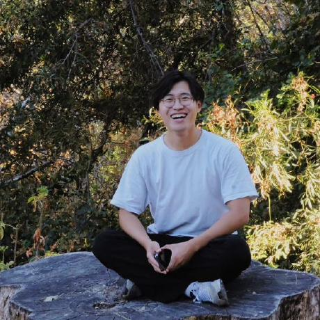
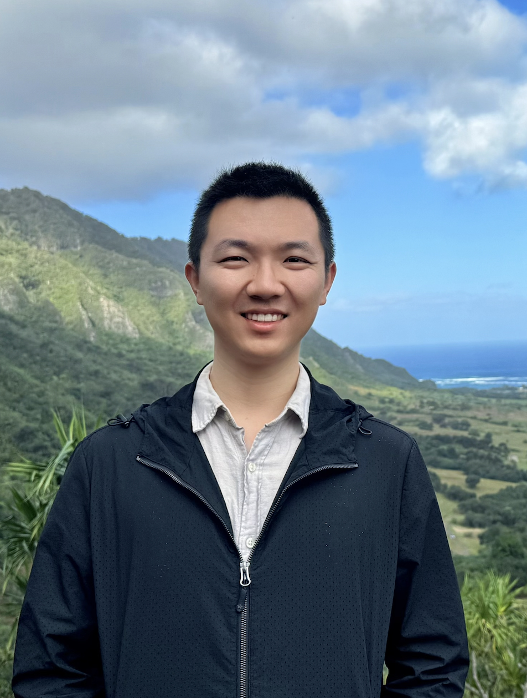
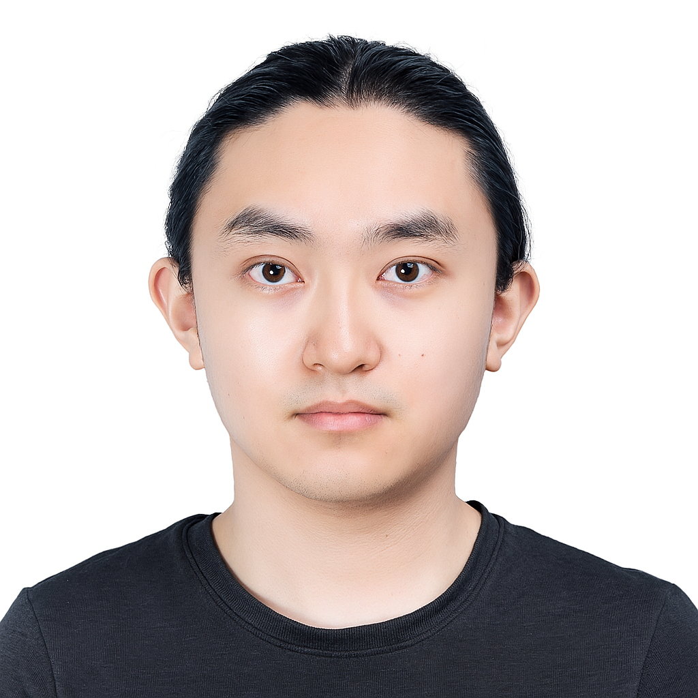
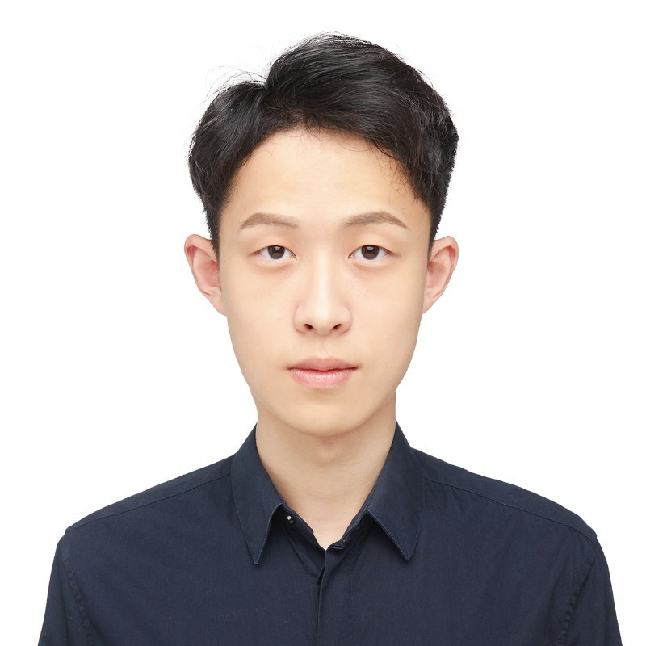
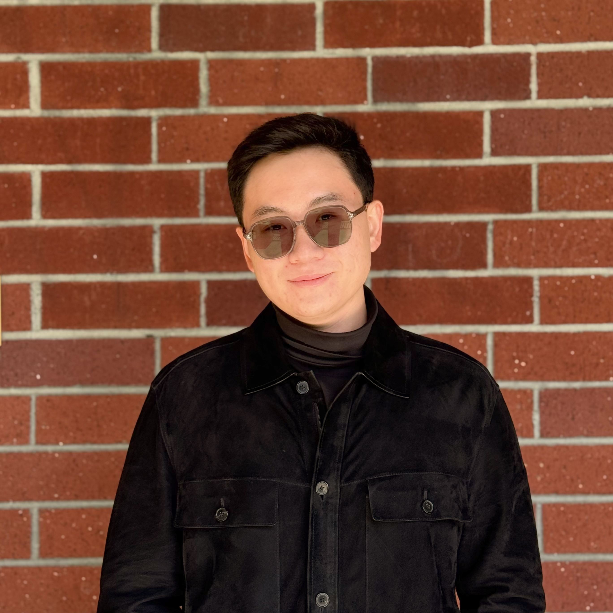
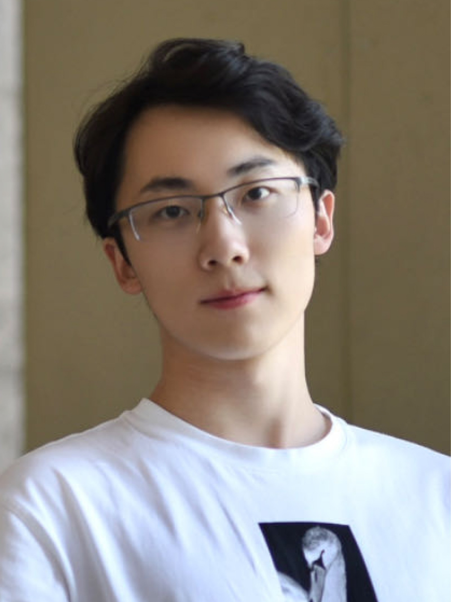

Agent Skills '26
The First Workshop on Agent Skills — Design, Evaluation, and Optimization of Procedural Knowledge for LLM Agents
LLM-based agents are rapidly moving from research demos to production systems—but their effectiveness hinges on the procedural knowledge they can access at inference time. Agent Skills are an emerging answer: structured packages of instructions, scripts, and references that augment agents without model modification.
A Skill is a SKILL.md file adopted across Claude Code, Gemini CLI, OpenClaw, Codex, and 30+ agent platforms. Eight focused Skills papers appeared in Feb–Mar 2026. An audit of 3,984 Skills found 37% contained security flaws. SkillsBench revealed that curated Skills improve pass rates by 16.2 points on average, yet self-generated Skills can hurt performance in nearly a third of tasks.
The field is moving fast and needs a dedicated venue. Agent Skills '26 brings together researchers and practitioners working on Skills design, benchmarking, optimization, security, and ecosystem infrastructure.
We invite contributions across the full lifecycle of Agent Skills, including but not limited to the topics below. This list is not exhaustive—we welcome submissions in any related area.
We accept two tracks:
All submissions must be in PDF format, conform to the ACM SIGPLAN proceedings template, and use the following LaTeX document class:
\documentclass[sigplan,review,anonymous]{acmart}
Submissions are double-blind (author identities are hidden from reviewers). Please ensure your manuscript does not reveal author identities. We encourage releasing reusable artifacts (code, Skills, datasets) after acceptance.
Submission portal pending approval. Subscribe to be notified when it opens.
Subscribe for Updates →Interested in reviewing? We are recruiting reviewers with expertise in agent skills, tool use, benchmarking, and related areas. Self-nominate below.
Reviewer Self-Nomination →






Interested in supporting Agent Skills '26? We welcome sponsorship at all levels. Please reach out at xiangyi@benchflow.ai for details.
Email xiangyi@benchflow.ai for submissions, logistics, or sponsorship.